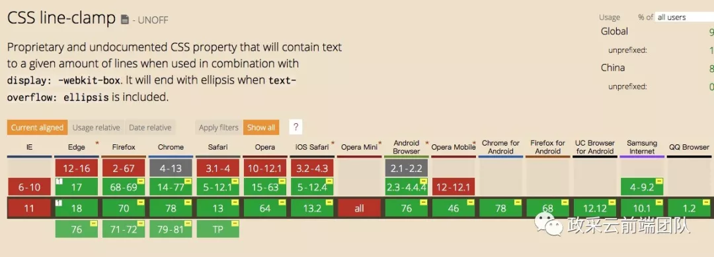

css默认支持的省略方案，但是有一个缺点就是只支持单行省略。
优点:
无兼容问题
响应式截断
文本溢出范围才显示省略号，否则不显示省略号
省略号位置显示刚好
短板:
只支持单行文本截断
适用场景:
适用于单行文本溢出显示省略号的情况
-webkit-line-clamp: 2；（用来限制在一个块元素显示的文本的行数，2 表示最多显示 2 行。为了实现该效果，它需要组合其他的 WebKit 属性）
display: -webkit-box；（和 1 结合使用，将对象作为弹性伸缩盒子模型显示 ）
-webkit-box-orient: vertical；（和 1 结合使用 ，设置或检索伸缩盒对象的子元素的排列方式 ）
overflow: hidden；（文本溢出限定的宽度就隐藏内容）
text-overflow: ellipsis；（多行文本的情况下，用省略号 “…” 隐藏溢出范围的文本)
优点
响应式截断
文本溢出范围才显示省略号，否则不显示省略号
省略号显示位置刚好
短板
兼容性一般：-webkit-line-clamp 属性只有 WebKit 内核的浏览器才支持

多行文本溢出不显示省略号
核心 CSS 语句
overflow: hidden；（文本溢出限定的宽度就隐藏内容）
line-height: 20px；（结合元素高度，高度固定的情况下，设定行高， 控制显示行数）
max-height: 40px；（设定当前元素最大高度）
优点
无兼容问题
响应式截断
短板
单纯截断文字, 不展示省略号，观感上较为生硬
适用场景
适用于文本溢出不需要显示省略号的情况
如果需要 。。。 ，可以通过css 伪类定位 来添加，但是这种方案存在 最后一个文字被挡住一半的情况
而且当文字不能超出规定范围的时，三个点还是在指定的位置，会与文字脱离
利用 Float 特性，纯 CSS 实现多行省略利用 Float 特性，纯 CSS 实现多行省略利用 Float 特性，纯 CSS 实现多行省略利用 Float似睡非睡
优点
无兼容问题
响应式截断
文本溢出范围才显示省略号，否则不显示省略号
短板
需要 JS 实现，
背离展示和行为相分离原则
文本为中英文混合或存在空格时，省略号显示位置会有偏差
适用场景
适用于响应式截断，多行文本溢出省略的情况
Demo
当前仅适用于文本为中文，若文本中有英文，可自行修改